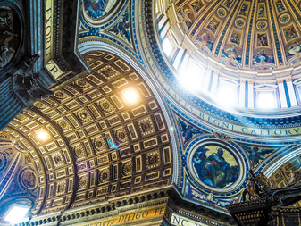
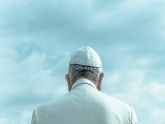

Vatican City is the smallest country in the world. It is encircled by a 2-mile border with Italy, Vatican City is an independent nation-state that covers just over 100 acres, making it one-eighth the size of New York's Central Park. Vatican City is governed as an absolute monarchy with the pope at its head with a contingent of Swiss Guards responsible for his safety since 1506. The Vatican maintains its own banking and telephone systems, post office, pharmacy, newspaper, mints its own euros, prints its own stamps, issues passports and license plates, operates media outlets and has its own flag and anthem. One government function it lacks: taxation. Museum admission fees, stamp and souvenir sales, and contributions generate the Vatican's revenue.

Have You Been To Vatican City?
The Vatican's history as the seat of the Catholic Church began with the construction of a basilica over St. Peter's grave in Rome in the 4th century A.D. The area developed into a popular pilgrimage site and commercial district, although it was abandoned following the move of the papal court to France in 1309. After the Church returned in 1377, famous landmarks such the Apostolic Palace, the Sistine Chapel and the new St. Peter's Basilica were erected within the city limits. Vatican City was established in its current form as a sovereign nation with the singing of the Lateran Pacts in 1929.
The Vatican Museums originated from the sculpture collection of Julius II, its earliest gallery opened to the public by Pope Clement XIV in 1773 and expanded by Pope Pius VI. Subsequent popes continued to bolster the renowned collections over the years, with the Gregorian Egyptian Museum, the Ethnological Museum and the Collection of Modern and Contemporary Religious Art among the additions.
Vatican City was designated a UNESCO World Heritage site in 1984.